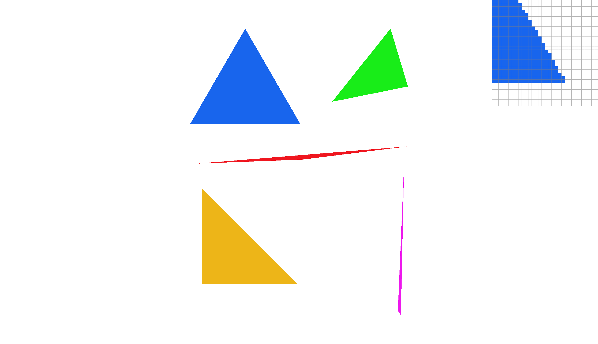
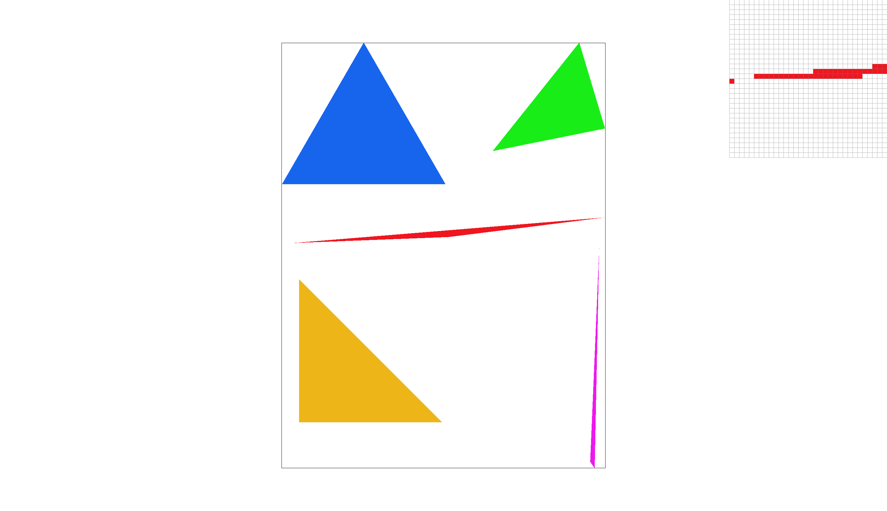
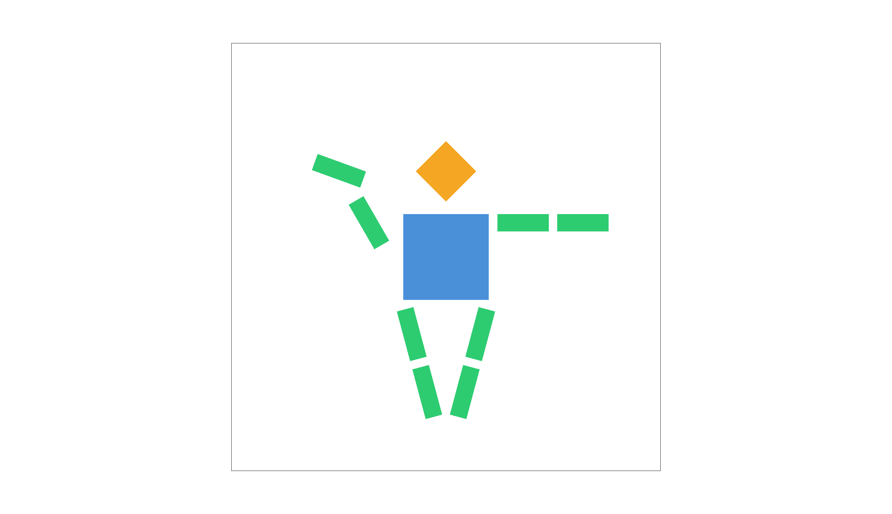
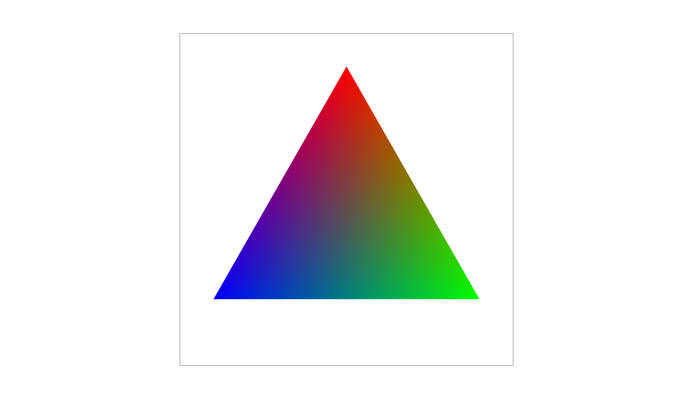
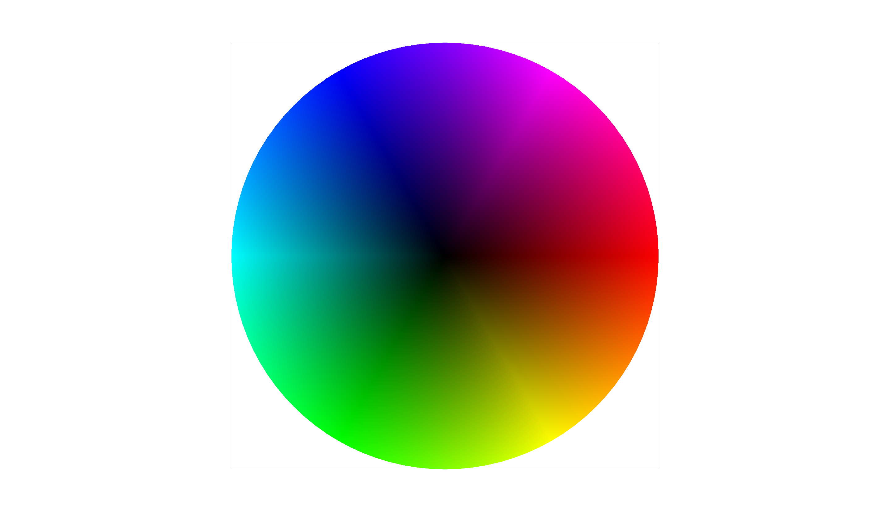
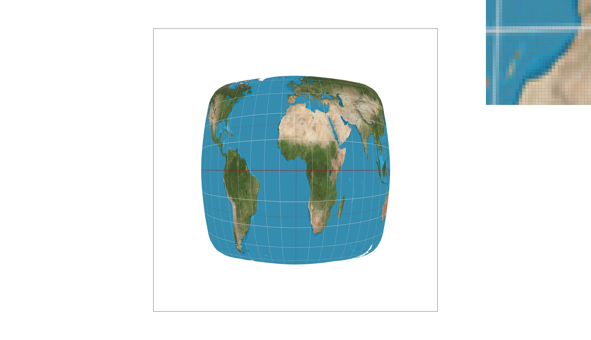
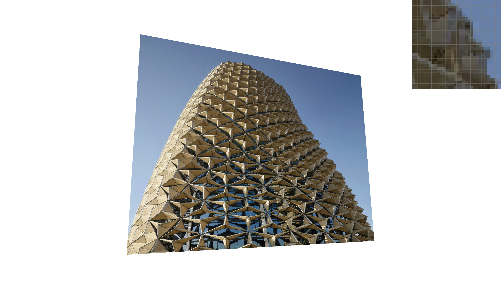
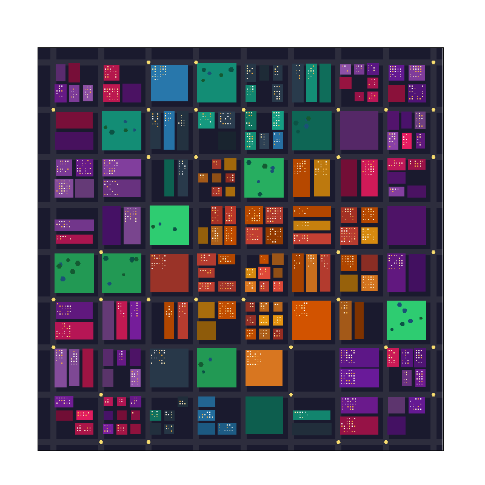

In this assignment I built a rasterizer that renders SVG files with triangle rasterization, supersampling antialiasing, hierarchical transforms, and texture mapping with mipmaps. Working through each task gave me a ground-up understanding of how graphics operations work at the pixel level. The edge function test for point-in-triangle was elegant in its simplicity, and seeing supersampling smooth out jagged edges by approximating area coverage was satisfying. The most interesting insight was realizing that supersampling, bilinear interpolation, and mipmapping all address the same underlying sampling theory problem but at different points in the pipeline, with very different performance tradeoffs.
To rasterize a triangle defined by three vertices (P0, P1, P2), I use the three-line edge function test. A triangle is the intersection of three half-planes, where each edge of the triangle defines a dividing line. For each edge from vertex Pi to P(i+1), the edge function is:
\[ L_i(x, y) = -(x - X_i) \cdot dY_i + (y - Y_i) \cdot dX_i \]where \( dX_i = X_{i+1} - X_i \) and \( dY_i = Y_{i+1} - Y_i \). This is the dot product of the vector from Pi to the sample point with the inward-facing normal of edge i. If the result is positive, the point is on the inside of that edge (for counter-clockwise winding). A point is inside the triangle if and only if all three edge functions have the same sign — all non-negative for CCW winding, or all non-positive for CW winding. To handle both winding orders, my implementation accepts either case. Using \( \geq \) and \( \leq \) rather than strict inequality ensures that samples exactly on an edge are drawn.
I sample at the center of each pixel, at coordinates \( (x + 0.5, y + 0.5) \), and call
fill_pixel() for each pixel that passes the inside test.
Bounding box efficiency: Before the sample loop, I compute the axis-aligned bounding box of the triangle by taking the floor of the minimum and the ceiling of the maximum of all three vertices' coordinates, clamped to the screen dimensions. The loop iterates only over pixels within this bounding box, so no pixels outside it are ever tested. This makes the algorithm exactly as efficient as one that checks each sample within the bounding box.

I implemented three optimizations over the basic bounding-box rasterizer:
1. Determine winding order once: The basic version checks both (all ≥ 0) || (all ≤ 0)
every pixel — 6 comparisons and 2 branches. Instead, I compute the signed area of the triangle using a cross
product before the loop. If the triangle is CW, I flip all edge coefficients so that "inside" is always the
non-negative side. The per-pixel test reduces to a single (all ≥ 0) check — 3 comparisons, 1 branch.
2. Precompute edge coefficients in Ax + By + C form: The basic version evaluates
-(sx - Xi) * dYi + (sy - Yi) * dXi from scratch per pixel — 6 multiplications and 6 subtractions.
By algebraically expanding this into \( L_i(x,y) = A_i x + B_i y + C_i \), the constants \( A_i, B_i, C_i \)
are computed once before the loop.
3. Incremental evaluation: Since \( L(x+1, y) = L(x, y) + A \) and \( L(x, y+1) = L(x, y) + B \), I evaluate the full edge function only at the top-left corner of the bounding box, then step through the grid using only additions. The inner loop performs 3 additions and 3 comparisons per pixel, compared to the basic version's 6 multiplications, 6 subtractions, and 6 comparisons.
Timing was measured using clock() around the svg.draw() call in
DrawRend::redraw():
| Test | Basic (ms) | Optimized (ms) | Speedup |
|---|---|---|---|
| test3 (dragon) | 19 | 12 | ~37% |
| test5 (cube) | 2 | 1 | ~50% |
The dragon (test3) shows the clearest improvement because it has the most triangles. The other test files
rasterize too quickly for clock() to distinguish meaningful differences.
Supersampling reduces aliasing (jagged edges) by taking multiple samples per pixel and averaging them. Instead of a single binary in-or-out decision per pixel, partial coverage is captured — a pixel half-covered by a triangle edge gets a blended color, producing smooth gradients instead of harsh stairsteps.
The core data structure is sample_buffer, a 1D vector of Color objects with
width × height × sample_rate entries. For a pixel at (x, y), its subsamples
are stored at indices (y × width + x) × sample_rate + s, where s ranges from 0
to sample_rate - 1.
I modified five functions in the rasterization pipeline:
1. set_sample_rate() and set_framebuffer_target() — both resize the
sample buffer to width × height × sample_rate so the buffer is correctly
sized when the sample rate or window dimensions change.
2. rasterize_triangle() — instead of sampling once at the pixel center, the function
loops over a sqrt(sample_rate) × sqrt(sample_rate) grid within each pixel. For example,
at sample rate 4, a 2×2 grid produces sample points at offsets (0.25, 0.25), (0.75, 0.25),
(0.25, 0.75), and (0.75, 0.75) within the pixel. Each subsample that passes the edge function test is
written to its own slot in the sample buffer.
3. fill_pixel() — used by points and lines, which are not supersampled. This function
fills all subsamples for a given pixel with the same color, so points and lines render correctly at any
sample rate.
4. resolve_to_framebuffer() — after all primitives are rasterized, this function
averages all subsamples for each pixel into a single color and writes it to the framebuffer. A pixel
where 2 out of 4 subsamples are inside a red triangle produces a 50% red, 50% white blend.
|
 |
|
|
|
|
At sample rate 1, the thin red triangle shows harsh binary aliasing — each pixel is either fully red or fully white, with visible gaps where the triangle is thinner than a pixel. At sample rate 4, intermediate pink pixels appear along the edge where only some of the 2×2 subsamples fall inside, producing a smoother result. At sample rate 16, the 4×4 grid captures even finer gradations of coverage, yielding the smoothest edge. The improvement occurs because supersampling approximates the true fractional area coverage of each pixel — the more samples, the finer the approximation.
I implemented jittered sampling as an alternative to grid supersampling. Instead of placing each subsample at the exact center of its grid cell, jittered sampling adds a random offset within the cell. The samples remain stratified (one per cell), but their irregular positions break up the regular aliasing patterns that grid sampling can produce.
Comparing the two rate-4 images in the pixel inspector, grid sampling produces a regular stairstep pattern along the thin red triangle. Jittered sampling replaces this with an irregular, noise-like pattern. While both use the same number of samples, the jittered version avoids the repetitive structure that the human eye easily picks up on, trading structured aliasing for less visually distracting random noise.
I implemented the three 2D homogeneous transformation matrices in transforms.cpp:
translate places the offset (dx, dy) in the third column,
scale puts (sx, sy) on the diagonal, and
rotate converts degrees to radians and builds the standard 2D rotation matrix.
These are composed via the hierarchical <g transform="..."> groups in the SVG file.

Barycentric coordinates express a point inside a triangle as a weighted combination of the three vertices. For a point (x, y) inside a triangle with vertices A, B, C, the barycentric coordinates (α, β, γ) satisfy α + β + γ = 1, and the point equals α·A + β·B + γ·C. Each weight represents how close the point is to the corresponding vertex — at vertex A, α = 1 and the others are 0; at the center, all three are roughly equal.
This is useful for smoothly interpolating any per-vertex attribute across the triangle. In the image below, vertex A is red, B is blue, and C is green. At each pixel, the color is α·red + β·blue + γ·green, producing a smooth gradient. Near the red vertex, α dominates so the color is mostly red. In the middle, all three contribute equally, producing a dark blend.
|
 |
 |
Pixel sampling determines how to look up a color from a texture image when the texture coordinate falls between texel centers. For each screen-space sample point inside a textured triangle, I use barycentric coordinates to interpolate the UV texture coordinates from the three vertices. These UV coordinates map into the texture image, but they rarely land exactly on a texel — so we need a sampling method to determine the color.
Nearest sampling rounds the UV coordinate to the closest texel and returns that texel's color. This is fast but produces blocky, pixelated results at boundaries between differently-colored regions in the texture.
Bilinear sampling finds the four texels surrounding the UV coordinate and blends them using linear interpolation — first horizontally between the two pairs, then vertically between the results. This produces smoother transitions at the cost of reading four texels instead of one.
|
|
|
|
|
 |
The difference between nearest and bilinear sampling is most visible at sample rate 1 along the coastline where ocean meets land. Nearest sampling produces blocky, jagged transitions between the blue water and tan land texels, while bilinear sampling blends these into smoother gradients. The white latitude/longitude grid lines also appear smoother with bilinear sampling. At sample rate 16, both methods improve because supersampling itself averages out the harsh transitions, but bilinear still produces a slightly cleaner result.
In general, the largest difference between the two methods occurs when the texture is being magnified (displayed larger than its native resolution), so that each screen pixel maps to a sub-texel region. In that case, nearest sampling snaps to one texel producing visible blockiness, while bilinear smoothly interpolates. When the texture is at its native resolution or being minified, the difference is less noticeable.
Level sampling selects which mipmap level to sample from based on how much the texture is being minified at each pixel. When a large region of the texture maps to a small screen area, sampling from the full-resolution texture causes aliasing — high-frequency detail that can't be represented at the output resolution produces noisy artifacts. Mipmaps are pre-filtered, progressively smaller copies of the texture. By choosing the right level, we sample from a version of the texture that has already been filtered to match the screen-space footprint of each pixel.
To compute the mipmap level, I calculate the UV coordinates at three points: the sample (x, y), its neighbor (x+1, y), and (x, y+1). The difference vectors tell us how fast the UV coordinates change per screen pixel. I scale these by the texture dimensions, take the length of each, and use the log₂ of the larger one as the continuous mipmap level. With L_NEAREST this rounds to the nearest integer level; with L_LINEAR it interpolates between the two adjacent levels.
Pixel sampling (nearest vs bilinear): nearest is fastest — one texel lookup per sample — but produces blocky textures. Bilinear reads four texels and blends, costing roughly 4× the memory accesses but producing smoother results. No extra memory beyond the texture itself.
Level sampling (L_ZERO vs L_NEAREST vs L_LINEAR): L_ZERO always uses the full-resolution texture — fast but aliases when minifying. L_NEAREST picks one mipmap level per sample, adding the cost of computing the level but effectively eliminating minification aliasing. L_LINEAR samples two adjacent levels and blends, doubling the texture lookups but producing the smoothest result. Mipmaps cost an extra 1/3 of the original texture's memory.
Supersampling: the most powerful antialiasing but the most expensive — 16× supersampling does 16× the work and uses 16× the sample buffer memory. It handles all types of aliasing (edges and textures) but is much slower than combining bilinear sampling with mipmapping, which achieves comparable texture quality at a fraction of the cost.
|
|
|
|
 |
|
With L_ZERO and P_NEAREST, the pixel inspector shows noisy, speckled pixels where the facade's fine geometric pattern is being minified. Switching to P_LINEAR (bilinear) softens the texels slightly but the fundamental aliasing from sampling the full-resolution texture remains. With L_NEAREST, the renderer selects an appropriately pre-filtered mipmap level, dramatically reducing the noise. Combining L_NEAREST with P_LINEAR produces the smoothest result — the mipmap eliminates minification aliasing while bilinear interpolation smooths the remaining texel boundaries.
I wrote a Python script (generate_city.py) that procedurally generates a bird's-eye
view of a nighttime city. The script creates an 8×8 grid of city blocks separated by dark streets,
with each block subdivided into randomly sized buildings. Four district palettes are assigned based
on position: warm reds and oranges for the downtown core, cool blues and teals for the business
district, modern purples at the edges, and occasional green parks with hexagonal trees. Building
brightness varies with randomly assigned "height" — taller buildings appear brighter, as if lit up
at night. Small yellow and white squares represent lit windows, and hexagonal street lights mark
intersections.
